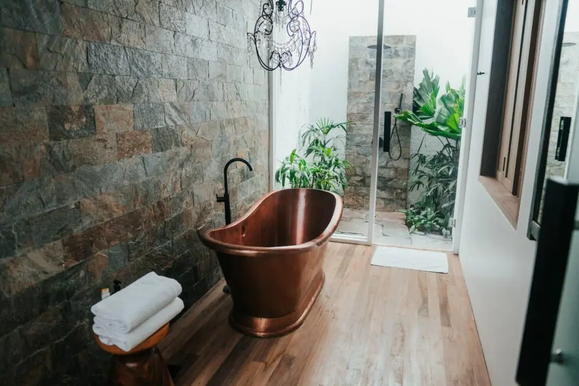

by Emily | Sep 15, 2021 | Bathroom , Copper | 0 comments
Copper is one versatile metal: it conducts heat and electricity, is resistant to moisture, lasts a very long time and even boasts antibacterial and antiviral qualities. The other great thing about copper? It looks good. In its natural form, copper has a rich, rosy hue unlike any other metal. And when copper is aged, things get even more interesting, with bright turquoise and jade green patinas swirling on its surface. With so much going for copper, it can make a stunning addition to any interior, but it works especially well in bathrooms. Whether you go for classic natural copper or bespoke patinated copper, this mighty metal creates statement pieces that are sure to impress your visitors for many years to come. Scroll down for a glut of inspiration on how to this unique material in the most relaxing room in your home. Run a bath, sink down and enjoy.
- Copper Bathtub
Make every day feel like a boutique hotel stay by installing a copper bathtub. How gorgeous does the gleaming copper look against the contrasting blue décor? That’s because orange and blue are opposite each other on the colour wheel, in case you didn’t know.
2. Aged Copper Bath Panels

The Northumberland finish aged copper with verdigris from Halman Thompson.
Not ready for a whole new bath? Panels are a quick and clever way to update your tub and get that boutique hotel vibe without a full refit. Whether you go for natural copper or an aged copper like the Northumberland design shown here, panels have the power to transform your plain old bath into a stunning centrepiece.
3. Aged Copper Wall Panels
Bathrooms are one of the few rooms in a home where you can afford to focus on dark instead of light. With good lighting installed, especially around the mirror, you can use deep colours to create a calming space. Here, the ultimate dark colour, black, works in harmony with aged copper wall panels . White tiles add a flash of just enough brightness.
4. Vessel Washbasins
Vessel sinks are one of the hottest current trends in bathroom design. Whether you opt for an ornate ceramic design or metal, like this gorgeous hammered copper, they add instant interest and luxury. Install atop a vanity unit, or go for something unique, like this rustic wooden plinth. We love how the mirror frame ties in with the rich, aged copper sink.
5. Copper and Moroccan tiles
We’ve already established that copper and blue are the perfect couple, but adding in Moroccan tiles can transform your bathroom, giving it that luxurious hammam feel. Here, classic blue and white designs are paired with copper vessel sinks and exposed copper pipes, another trend in bathroom design. It’s a commercial bathroom, but sometimes they can offer great inspiration for the home.
6. Copper Tiles
These glass copper tiles look luminous against the matt black and charcoal grey that surrounds them. The texture and surface pattern here is similar to that of aged copper sheets . In fact, this look could be recreated using patinated copper wall panels – and you wouldn’t even have to think about scrubbing mould out of any pesky grouting.
7. Exposed Copper Pipes
Copper pipes used to be something you kept hidden in a bathroom design. These days, thanks to the trend for all things industrial, copper pipes have come out of hiding and are very much on display. Take this stunning vintage bathroom as an example. Textured sage green complements chunky concrete and what looks like copper cladding on the upper section of the walls. This would look amazing if aged copper had been used, given that the oxidisation process often produces patinas with green shades that would match the walls and floor.
8. Little Details
They say the devil is in the detail, and thanks to that trend for exposed copper pipes, there’s no shortage of copper pipe bathroom accessories on the market. From toilet roll holders to toothbrush storage, you’re spoilt for choice, but we particularly like these copper pipe love heart decorations for the wall. They’ll bring some softness and a dash of personality to an industrial theme.
9. Copper Shower
Most showers come in a predictable chrome colourway. Break away from the norm and truly commit to the copper theme in your bathroom by installing a copper shower, like this one in a boutique hotel in Paris. Shown here against dazzlingly white tiles, this shower would be perfectly complemented by copper wall cladding or a copper bath panel.
10. Aged Copper Countertop

Here, a stylish vessel sink sits pretty atop a copper worktop . The ‘Northumberland’ is a bespoke, expertly-aged copper finish that adds interest and depth to any room. Each piece is different, but we work with you to make sure the metal is exactly what you’re looking for, before lacquering the surface to freeze the ageing process and lock in that truly unique patina for many years to come. Choose your favourite from our range of beautiful aged copper designs here .
Products


If you can dream it, we’ll make it.
Bars, balustrades, staircases, worktops, cladding and pieces that don’t have a name yet. Our designers and craftspeople work in brass, copper, zinc and steel, and alongside wood.